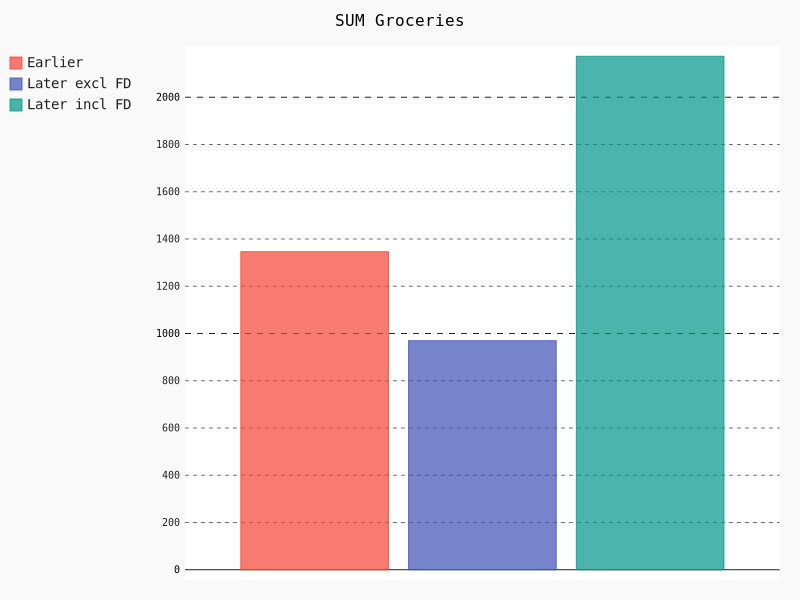
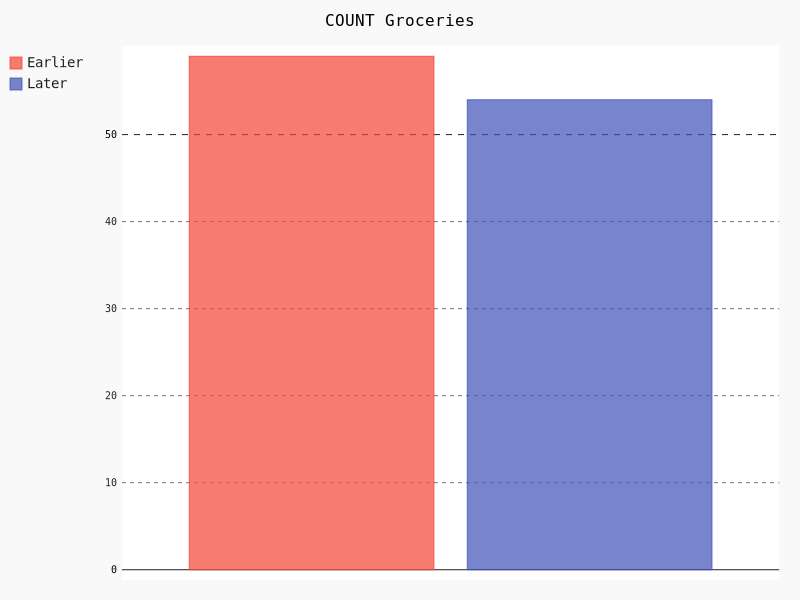
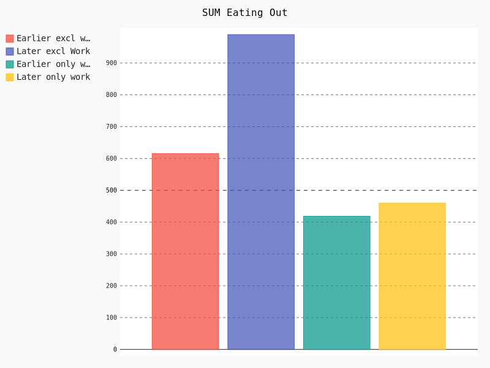
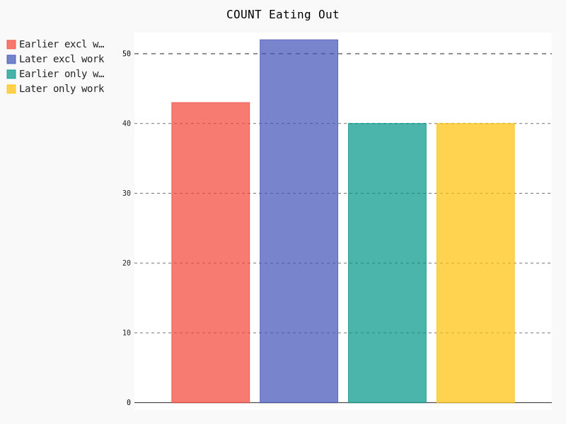
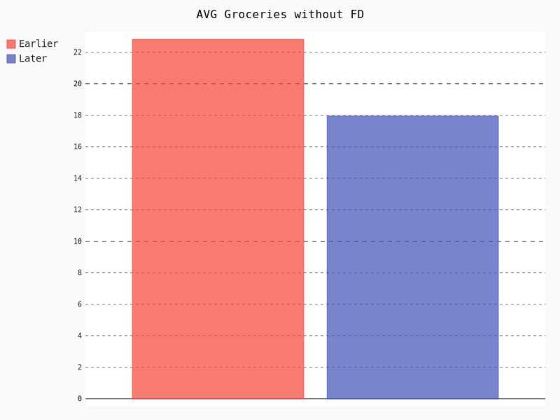
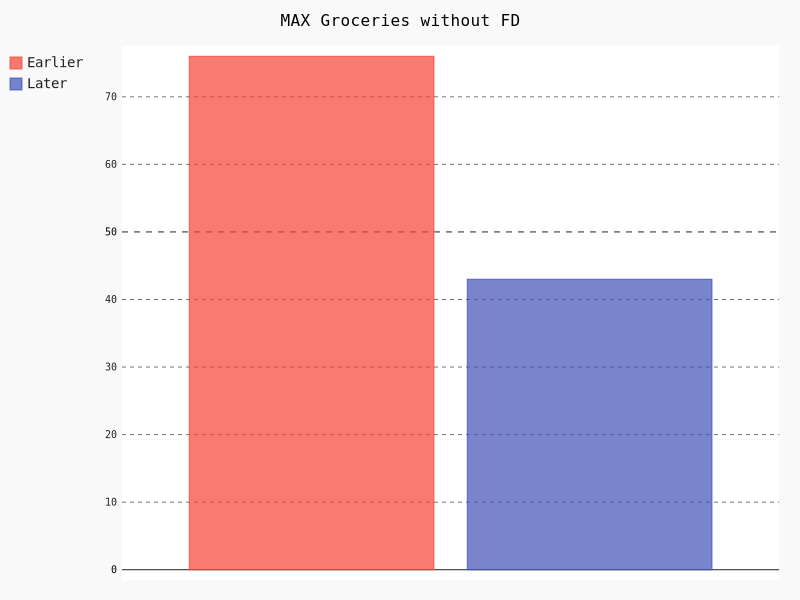

Food Kit Delivery services became popular in Germany about four to five years ago. The idea of these services is very simple: customer decides on the quantity and the type of the meals that will be delivered on a weekly basis. Normally, a box consists of a number of raw products packages for the desired number of meals and the desired number of people. The difference between this delivery and any groceries shop delivery consist of getting a food kit (recipe, ingredients for certain amount of people) delivered systematically vs delivery of ordered products on demand. Some positive things about a food kit delivery are:
Before introducing the graphs one mention is important: there is a certain error in the financial aggregations and filters since all data points were collected manually. Some of the transactions were collected after the actual transaction took place. However, this error should not influence the overall results too much. 

As it can be seen, the total groceries cost grew with the FD usage by about 38% where the actual cost for other groceries excluding FD decreased by around 28%. This means that now I have an additional financial burden of 10% in comparison to the previous cost level. Additionally, there is a minor decrease in the total number of groceries shopping, meaning this factor is not important. This result might be explained through further necessity to buy breakfast, snacks products and also cook for other three to four days. Another cost increase factor might be explained by changed nutrition habits, this will be discussed in the section below. 

Similar to the groceries statistics the total cost of eating out (excluding lunch with colleagues and breakfast at work) increased by around 38%. At the same time, eating-out-during-work behavior did not change at all. The slight total cost increase can be explained by new restaurants in the office proximity and inflation of around 2%. A possible explanation for the increased cost of eating out is an increased desire to try something new and not to cook at home. Also, the total number of going out hasn't increased that much in comparison to the sum spent, meaning the class of the restaurants has increased. 

The two graphs above show that the groceries bucket structure has changed a bit. The average groceries bucket price decreased by 21%. Maximum groceries bucket has also decreased by 43% signaling that the habit of shopping in advance did not progress with the FD usage. The minimum price of a groceries bucket stayed at the same level, therefore, won't be shown or mentioned here any further. So far it seems that financially FD is rather a large burden on the budget.
Another assumption made by me during FD usage was that I now eat healthier. To prove this point I will compare he previous and the current state of following habits:
My average shopping list has changed a bit. About 20% of the positions disappeared or now are appearing less frequent. For example, I now buy fewer sweets: chocolate, pies, frozen pies, and sweetened drinks. The main part still belongs to the dairy products like milk, eggs, cheese. Meat products are now chosen rather carefully, meaning I plan first on what I cook and only afterward buy everything according to the list. There are no groceries quality shifts - I still rarely buy bio chicken, but I still prefer high-quality beef. Before using an FD, the process was rather backward: I was buying products that might be used in different dishes and afterward at home I would choose what can I actually cook. Vegetables and fruits are present in an average shopping list in about the same proportion as before. Alcohol and a certain amount of sweet things are also present and is purchased on occasion. All in all, it looks like now I am prone to buy fewer products in general, at the same time frozen pizza, TV-dinners became rare guests in my fridge and stay there for quite a long time as an absolutely emergency product.
The minimum amount of cooking a fresh meal is now at least 3 times a week due to the FD configuration. On other days I tend to cook in advance: stew, chili, eintopf, pasta - are the things to go due to the minimum amount of work required and how many portions being produced in the end. Frozen food and instant noodles are being used when there was an agreement to cook later on but the hunger has already arrived, sometimes there is no time or the hunger is not that bad. If a year ago I would use up three to four frozen pizzas in a week, during FD usage this number declined to one or at most two pizzas per week. According to the financial analysis the total number of going out increased, but the amount of proper cooking increased as well, which synergies well with the assumption about better nutrition habits.
Since FD usage I got a habit of planning in advance what to eat and cook. This change allowed me to better balance the nutrients like fat, carbohydrates, and protein. Additionally, different side-dish and main dish combinations, as well as new forms of side-dishes, allowed me to use more combinations to keep the nutritional balance. According to the FitnessPal (where I try to keep an eye on my calories and the food structure) I now make less spontaneous decisions to eat a muffin or some additional bakery piece during my work. Since I already pay quite a lot for the healthy food I might as well support the trend in the rest of the week. For me personally, it is now easier to eat fewer sweets or to overeat in the evening. It is easier to keep an eye on the total calories due to the full information provided by the FD service. So, as a help to kick-start healthier eating habits, such a service comes in handy. The information provided by the FD about the nutrition value of the weekly box makes it easier to plan out the structure of the food consumption and the corresponding preparation process several days ahead. Also, FD simplifies the collection of the proper recipes by narrowing down the number of potential recipes and resources to check.
The last assumption about an FD value was its influence on the amount and joy-level of a cooking process. I, personally, like following really simple instructions and being able to prepare a delicious meal. However, there is a certain problem connected with the need to cook at home. My thoughts about the fun-factor developed itself as a sinus-like function. In the beginning, I liked that I cook and eat healthier and nominally spend less money on eating out or buying fast food. After a while I got tired of cooking all the time (at least I had the feeling that I do that all the time), but I still liked the healthy eating trend plus the recipes were quite nice, so I started going out a bit more and choosing the dishes that I couldn't really cook at home. After some time I have started to notice that the nutrition cost has risen, so I was pressured to start cooking at home more. This trend might be very obvious or sometimes it can be saturated by the fact that the dishes are amazing, the feeling of achieving something, a little bit of pride... This question is rather a tricky and personal one to answer. I, personally, now have less stress during cooking and I am able to decide to cook at home after work a bit easier. I am also very satisfied when I'm in control of when and what I eat. Cooking together with a partner or a friend also got a bit easier and more entertaining. So, I would say, I liked this aspect of an FD quite a lot.
After weighing all positive and negative things about FD, I, surprisingly, might have changed my mind. Before starting this blog post I was hundred percent pro-FD, however, the actual value of the service turned out to be a complex matter. The in-depth analysis of the initial assumptions resulted in one being completely destroyed, one being very personal and one being rather neutral than positive. The financial assumption proved to wrong, which is a rather important point for me. One specific service I use is not the most expensive one but it turned out to create quite a noticeable burden on my personal finance. The analysis of the healthier nutrition assumption turned out to be very situational and rather a personal matter that is very hard to quantify without hard data. I would think about this point twice before deciding for an FD. The fun assumption nominally holds true, but due to cyclic mood connected with cooking at home often, this point becomes very personal and not hundred percent valid. I personally value increased control over my nutrition habits higher than the nominal cost of a weekly box. I like the variety of the recipes I get to choose and the low repetition ratio. The combination of the products containing rare or rather daring things which creates a fun-component gives me certain pride and achievement satisfaction. As the conclusion, I would recommend using a raw food delivery service from four to twelve month straight, if the increased food cost is not of a big concern. Within an under a year time span it is possible to collect a number of cool recipes, actually, check them out and be able to gain control over some of the nutrition habits.